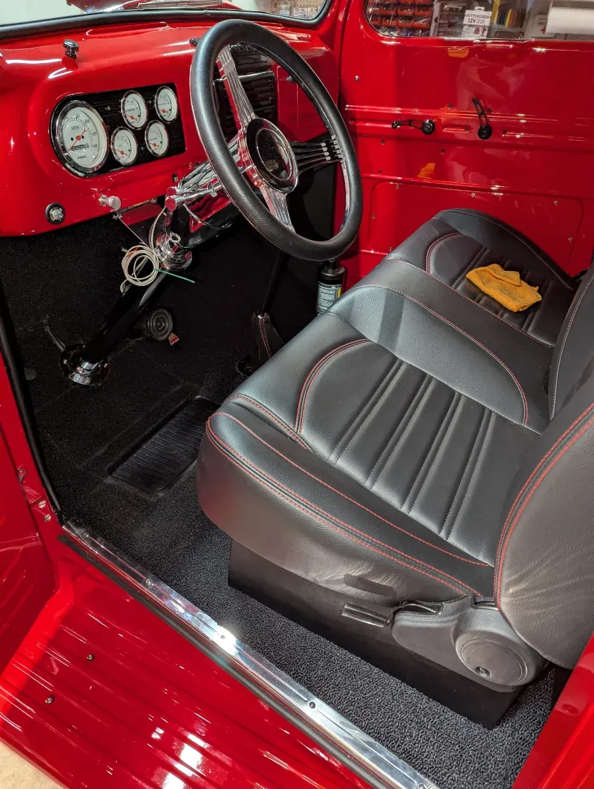
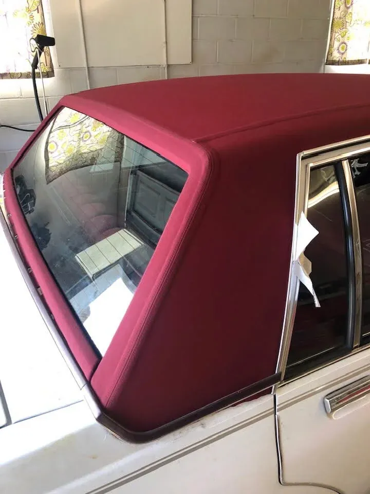

Expert upholstery for every vehicle and vessel type
Four trades under one roof in Monroe, North Carolina. Every job is quoted in person and free of charge.

Convertible Tops
Vinyl and canvas tops, heated glass and plastic windows, plus the frame and pad work underneath that most quotes leave out.
- Vinyl and canvas
- Heated glass windows
- Frame and pad repair

Auto Upholstery
Seats, headliners, door panels and carpet, from one torn seat to a complete classic interior built to your spec.
- Seat repair and rebuilds
- Headliners and door panels
- Carpet and sound deadening
Sunroof Shade Repair
Sagging, torn or stuck sliding sunshade? We recover the panel you already have instead of replacing the whole sunroof assembly.
- Sagging and torn shades
- Matched to your headliner
- Recover, not replace

Marine Upholstery
Boat seating, helm trim, cushions and canvas in materials built for sun, standing water and salt.
- UV-stabilised marine vinyl
- Quick-dry foam
- Solution-dyed canvas

Aviation Upholstery
Cockpit and cabin interiors, seating, panels and carpet. A trade almost nobody else in the region offers.
- Cockpit and cabin seats
- Side panels and trim
- Cabin carpet

Motorcycle Seats
Recovered, reshaped or built to your own pattern, with custom stitch work and contrast detail.
- Recover and reshape
- Diamond and pleated stitch
- Pan repair
Ready to transform your interior?
Bring new life to your seats, tops, and trim with work built for comfort, durability, and long-term pride of ownership.
Free estimates · In-person quotes · Monroe, NC since 1989